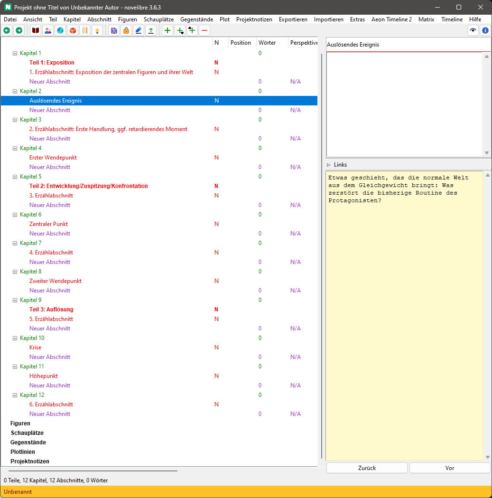

nv_templates
Benutzerhandbuch
Diese Seite gilt für die neueste Ausgabe von nv_templates. Sie können sie mit Hilfe > Vorlagen-Plugin Online-Hilfe öffnen.
Mit novelibre können Sie eine Erzählstruktur mit Stadien definieren (siehe Plotten mit novelibre). nv_templates vereinfacht die Wiederverwendung von Erzählstrukturen.
Wichtig
Das Plugin wird mit Beispielvorlagen geliefert, die automatisch in den templates Ordner der novelibre-Installation kopiert werden. Vorhandene Dateien werden dabei überschrieben. Wenn Sie also Ihre Vorlagen anpassen, benennen Sie sie besser um.
Befehlsreferenz
Datei > Neu
Aus Vorlage erzeugen…
Damit schließen Sie das laufende Projekt und erzeugen ein neues Projekt mit der Erzählstruktur aus einer Markdown-formatierten Vorlagendatei.
Ein Dateiauswahldialog fragt nach Speicherort und Dateinamen des neuen Projekts. Falls Sie diesen Dialog abbrechen, können Sie den Dateinamen auch später beim Abspeichern vergeben.
Dann fragt ein zweiter Dateiauswahldialog nach der Vorlagendatei, die angewandt werden soll.
Extras > Erzählstruktur-Vorlagen
Laden…
Damit laden Sie eine Erzählstruktur aus einer Markdown-formatierten Vorlagendatei in Ihr aktuelles Projekt.
Ein Dateiauswahldialog fragt nach der Vorlagendatei, die angewandt werden soll.
Speichern…
Damit speichern Sie die Erzählstruktur Ihres aktuellen Projekts in eine Markdown-formatierte Vorlagendatei.
Ein Dateiauswahldialog fragt nach dem Dateinamen der neuen Vorlagedatei.
Ordner öffnen
Damit können Sie den Vorlagenordner im Dateimanager öffnen, um zum Beispiel die Vorlagendateien zu verwalten und zu bearbeiten.
Konventionen
Markdown-Dateistruktur
Die Erzählstruktur-Vorlagendatei definiert eine Erzählstruktur mit Hilfe von Markdown-Überschriften und normalem Text.
Überschrift erster Ordnung für die Hauptstadien, z.B. Akte
Die Überschrift erster Ordnung beginnt mit #,
gefolgt von einem Leerzeichen und dem Titel des Stadiums.
Überschrift zweiter Ordnung für untergeordnete Stadien oder Wendepunkte
Die Überschrift zweiter Ordnung beginnt mit ##,
gefolgt von einem Leerzeichen und dem Titel des Stadiums.
Gewöhnlicher Text
Der Text unterhalb einer Überschrift besteht aus Notizen für das Element, das aus der Überschrift erstellt wurde.
Beispiel
# Teil 1: Exposition
Die Exposition dient der Einführung in die Welt der Geschichte. Ziel ist es, der Leserschaft genügend Information zu geben, um sich in der Welt der Geschichte zurechtzufinden.
## 1. Erzählabschnitt: Exposition der zentralen Figuren und ihrer Welt
Die normale Welt: Wie sieht die Routine des Protagonisten aus? Wie lautet die zentrale Frage?
## Auslösendes Ereignis
Etwas geschieht, das die normale Welt aus dem Gleichgewicht bringt: Was zerstört die bisherige Routine des Protagonisten?
## 2. Erzählabschnitt: Erste Handlung, ggf. retardierendes Moment
Die Reaktion des Protagonisten auf das auslösende Ereignis: Wie reagiert der Protagonist auf das auslösende Ereignis?
## Erster Wendepunkt
Der Protagonist nimmt den Kampf um sein Ziel auf. Er verlässt die alte Welt und begibt sich in eine unbekannte Welt: Was ist das Ziel des Protagonisten? Warum muss er es unbedingt erreichen? Wie lautet die dramatische Frage?
# Teil 2: Entwicklung/Zuspitzung/Konfrontation
Im ersten Wendepunkt tritt der Protagonist aus seiner gewohnten, aber gestörten Welt in eine neue, unbekannte Welt. Er muss in dieser neuen Welt bestehen, wenn er sein Ziel erreichen will. Im zweiten Akt geht es um die Versuche, mit denen er dieses Ziel realisieren will. Er wird scheitern und er wird kleine Erfolge haben, wird sich seinem Ziel annähern und wieder von ihm weggeschleudert. Es gelingt ihm jedoch nicht, sein Ziel endgültig zu erreichen, weil die antagonistische Kraft es immer wieder aufs Neue vermag, ihn daran zu hindern. Entscheidend ist, dass es -- trotz kleiner Zwischenerfolge -- tendenziell immer schwerer für ihn wird, sein Ziel zu erreichen, dass er immer mehr Risiken eingehen muss, weil die antagonistische Kraft ihm immer größere Steine in den Weg legt. Der Konflikt spitzt sich immer mehr zu.
## 3. Erzählabschnitt
a) Alles läuft bestens: Welche Erfolge erzielt der Protagonist? Wie schafft er es, die Hindernisse der antagonistischen Kraft zu überwinden?
b) Es geht immer weiter bergab: Welche Niederlagen muss der Protagonist einstecken? Wie hindert die antagonistische Kraft ihn daran, sein Ziel zu erreichen?
## Zentraler Punkt
a) Im Moment größter Hoffnung muss der Protagonist einen Rückschlag einstecken, der ihn dazu führen kann, ein neues Ziel zu verfolgen.
b) Der Protagonist kommt an seinem Tiefpunkt an, erlebt Tod und Wiedergeburt, schöpft jedoch neue Hoffnung und rappelt sich wieder auf.
## 4. Erzählabschnitt
a) Der Protagonist erholt sich nicht von dem Rückschlag: Es geht weiter bergab.
b) Mit neuem Mut und noch größerer Entschlossenheit verfolgt der Protagonist sein altes oder neues Ziel. alles läuft bestens.
## Zweiter Wendepunkt
a) Der Protagonist ist kurz davor, alles zu verlieren, durchlebt Tod und Wiedergeburt und schöpft neuen Mut.
b) Der Protagonist ist kurz davor, sein Ziel zu erreichen, wird dann jedoch zurückgeworfen.
# Teil 3: Auflösung
Im dritten Akt nimmt das Tempo zu. Der Protagonist und die antagonistische Kraft stehen sich zum großen Finale gegenüber, die antagonistische Kraft rüstet zum letzten und größten Gegenschlag. Der Protagonist gerät in eine Krisenentscheidung, und im Höhepunkt wird der Konflikt endgültig und unwiderruflich gelöst. Die antagonistische Kraft wird vernichtend geschlagen, und der Protagonist erreicht sein Ziel -- oder er verliert es für immer.
## 5. Erzählabschnitt
Vorbereitung auf die alles entscheidende "letzte Schlacht".
## Krise
Der Protagonist befindet sich in einem Dilemma und muss sich endgültig entscheiden, was er will.
## Höhepunkt
Die "letzte Schlacht". Der Konflikt wird entschieden. Der Protagonist erreicht sein Ziel, oder verliert es für immer.
## 6. Erzählabschnitt
Der Konflikt ist gelöst, der Protagonist ein neuer Mensch geworden: Was hat sich durch den Konflikt verändert? Wie geht es mit dem Protagonisten weiter?
Diese Datei erzeugt die folgende Struktur in einem leeren Projekt:
